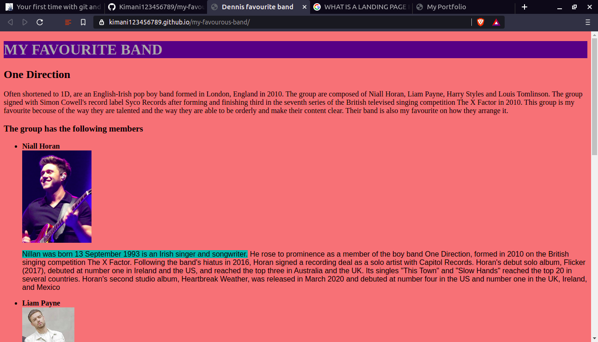
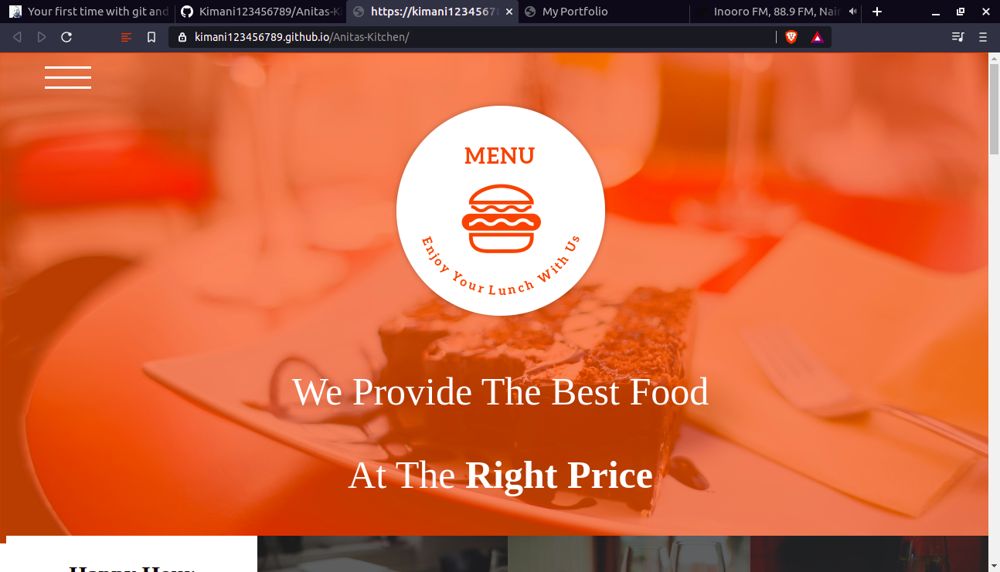
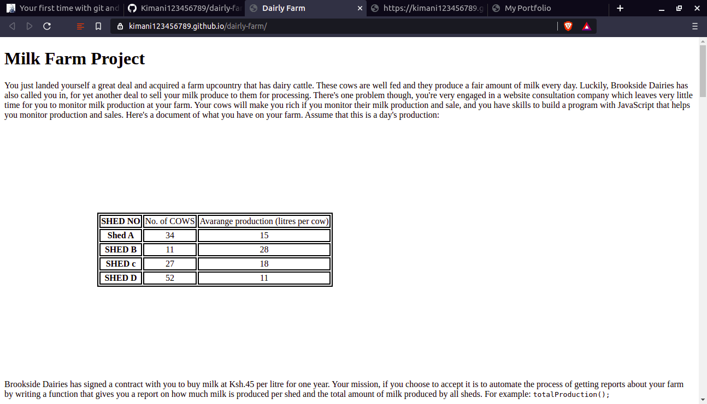
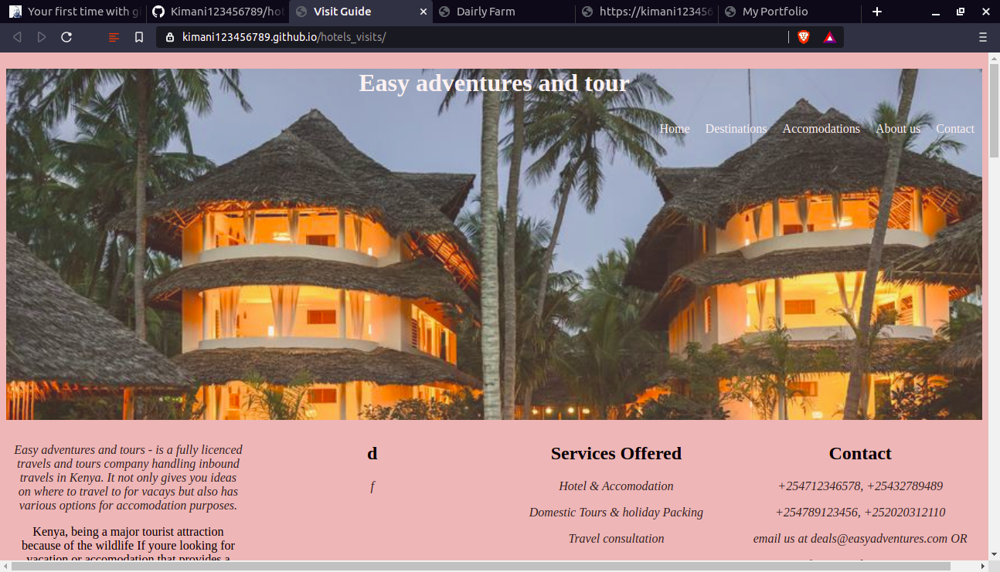

This is a webpage that is briefly describing about my favourite band Which is THE ONE DIRECTION which is England based band. The webpage is briefly describing the members of the group ,their origin . The webpage is also describing about their best selling albulm, Further the webpage is composing the list if my favourite music with real links which are giving the real music of my favourite band. This link will direct you to the website . You can also view my repository in github to see much more about my code.
This was my second project in Moringa School where we were supposed to make a code from a website which was produced as an image and we were expected to create our own code, This was a real challage since we were to code a project which was arleady design and we were supposed to make our own code that will produce the same image . It was about a website that had good color and customer friendly that can help one make an order in accordance to the time of the day the diffrent dishes offered , the customer satisfaction ,a cart form for subscribtion and social media handle as show and you can view the code from github repositoryin the links
This was a website which was to give about milk production from a farm where we were supposed to make a website calculating cost of farm output cost and were were supposed to use JavaScript function which would help in calculating how much the farm word make , then we were supposed to create another function containg HTML inputs where a farmer would pop new milk price and would help in calculating the milk price depending on whether its a reap year or not the website shown and the github repository in this link.
This was my first project where we i did a groupwork with my college Floice and Michael where we were able to make a website which would help a tourist who is not having an idea about visiting Kenya where we would have a guide page starting with contacts which would help a tourist call for assistance then we had an accomodation page which was guiding on tourist on best hotels in Kenya while the last page is about best sites to visit as shown the code is available in the following github repository on the website.
I was born and grown up in Murang'a county where i grew up and started my education
my education background
I study Information Security and Forensics and in order to be good in the security sector of IT programming skills are vital in order to help in designing new security tools which will be able to counter Cybercrimes I preffered Moringa school class becouse it is enabling me be able to code and explore on how to build a good website practice more vivd that how Universities present programming since there are multiple languages thus less time and less study here an lucky am able to learn new thing helping me be more equiped to become good security expert
i like